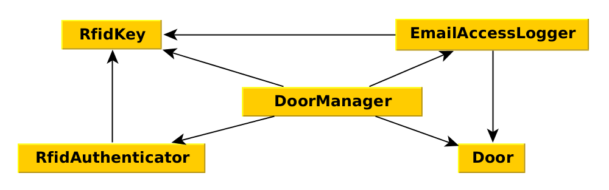

OOP, DI, DiP, IoC, DIC, SOLID
Dependencies
Class A
depends on
class B
Doors with electric lock
- Web-page with a button. Send "open" request on click.
- Open lock when it's allowed.
- Result on screen.
Easy-peasy!
It will be a cake!
public function actionOpen() {
$result = false;
$canBeOpened = HourSettings::find()->select('can_be_opened')
->where(['hour' => date('H')])->scalar();
if ($canBeOpened) {
$fd = dio_open('/dev/ttyS0', O_RDWR | O_NOCTTY | O_NONBLOCK);
dio_fcntl($fd, F_SETFL, O_SYNC);
dio_tcsetattr($fd, ['baud' => 9600, 'bits' => 8]);
dio_write($fd, "OPEN\n");
$result = dio_read($fd, 3) === "1\n";
dio_close($fd);
}
return $this->render('open', ['result' => $result]);
}
- Data
- Domain logic
- Business logic
- Configuration
- Layout
Problems:
- No architecture
- Everything is mixed up
- No way to test
- In future — copy-paste, bugs and pains
Let's make it better from the scratch
SOLID
The Single Responsibility Principle
Separate
class DoorManager
{
public function open()
{
$door = new Door();
return $door->open();
}
}
public function actionOpen()
{
$doorManager = new DoorManager();
return $doorManager->open();
}
actionOpen() depends on DoorManager
DoorManager depends on Door
Relations:

- High Cohesion
- Low Coupling
Button is not secure!
Go give RFID for everyone and make some logging!
class DoorManager
{
public function open(RfidKey $rfid)
{
$door = new Door();
$log = new EmailAccessLogger('alert@superdoors.com');
$auth = new RfidAuthenticator($rfid, [
'users' => User::find()->where(['active' => 1])->all()
]);
if ($auth->canOpenDoor($door)) {
$log->accessGranted($door, $rfid);
return $door->open();
} else {
$log->accessDenied($door, $rfid);
return false;
}
}
}
More dependencies

Win:
|
Lose:
|
Hey, we also need a button to lock a door...
Business always brings
pain
new requirements
Bad code brings pain
How to pretend it was meant to be like this.
Evolution of dependencies management
Initialization in constructors
class DoorManager {
private $door; // key, auth, log
public function __construct(RfidKey $key) {
$this->key = $key;
$this->door = new Door();
$this->log = new EmailAccessLogger('alert@superdoors.com');
$this->auth = new RfidAuthenticator($this->key, [
'users' => User::find()->where(['active' => 1])->all()
]);
}
public function open() {
if ($this->auth->canOpenDoor($this->door)) {
$this->log->accessGranted($this->door, $this->rfid);
$this->door->open();
} else {
$this->log->accessDenied($this->door, $this->rfid);
}
}
public function close() { } // implementation
}
Win:
|
Lose:
|
Magnetic lock will be installed on part of the doors.
Almost everything is the same.
* only the protocol differs
Possible solutions:
- Add
ifcondition insideDoorclass - Add
ifbeforeDoor()object creation - Create two code branches:
masterandmagnet-door-master - Create something like
MagnetDoorManager
SOLID
The Dependency Inversion Principle
Dependency Inversion Principle — principle in object-oriented development, used to reduce coupling in programs.
Ideas:
- High-level modules should not depend on low-level modules. Both should depend on abstractions.
- Abstractions should not depend on details. Details should depend on abstractions.
Without DI:
The object itself creates objects that it needs, then it can use them.
With DI:
Objects get dependencies from outside and uses them.
Create abstractions
interface DoorInterface {
public function open();
public function close();
}
class Door implements DoorInterface {
public function open() { } // implementation
public function close() { } // implementation
}
class MagnetDoor implements DoorInterface {
public function open() { } // implementation
public function close() { } // implementation
}
class FakeDoor implements DoorInterface { // for testing purpose
public function open() { return true; }
public function close() { return true; }
}
Change constructor
class DoorManager {
private $door; // key, auth, log
public function __construct(DoorInterface $door, RfidKey $key) {
$this->door = $door;
$this->key = $key;
$this->log = new EmailAccessLogger('alert@superdoors.com');
$this->auth = new RfidAuthenticator($this->key, [
'users' => User::find()->where(['active' => 1])->all()
]);
}
}
public function actionOpen($keySecret)
{
$key = new RfidKey($keySecret);
$door = new MagnetDoor();
$doorManager = new DoorManager($door, $key);
return $doorManager->open();
}
Win:
|
Lose:
|
Dependency Injection — is a set of practices, that helps to build applications with low coupling.
it's not only a:
|
it's:
|
DI variations
DI through setters
class DoorManager {
private $door;
private $key;
private $auth;
private $log;
public function __construct(DoorInterface $door) { }
public function setKey(KeyInterface $key) { }
public function setAuth(AuthManagerInterface $auth) { }
public function setLog(LoggerInterface $log) { }
}
public function actionOpen($keySecret)
{
$door = $this->getDoor();
$doorManager = new DoorManager($door);
$doorManager->setKey(new RfidKey($keySecret));
// ...
return $doorManager->open();
}
Win:
|
Lose:
|
Dependencies are optional
public function open()
{
if ($this->log !== null) {
$this->log->accessGranted($this->door, $this->key);
}
}
You don't need optional dependencies!
class FakeLogger implements LoggerInterface
{
public function accessGranted(DoorInterface $door, KeyInterface $key)
{
return true;
}
}
DI through constructor
class DoorManager {
private $door; // key, auth, log
public function __construct(
KeyInterface $key, DoorInterface $door,
AuthManagerInterface $auth, LoggerInterface $log,
) {
$this->door = $door; // key, auth, log
}
}
Win:
|
Lose:
|
How do we create DoorManager now?
public function actionOpen($keySecret)
{
$key = new RfidKey($keySecret);
$door = new MagnetDoor('some-door-id');
$users = User::find()->active()->all();
$auth = new RfidAuthenticator($key, $users);
$log = new EmailAccessLogger('alert@superdoors.com');
$doorManager = new DoorManager($key, $door, $auth, $log);
return $doorManager->open();
}
- Dependencies are being created outside of the class
actionOpenmethod is godlike again- Should we copy-paste it in
actionClose?...
Looks like a way to nowhere
DiC!
Dependency injection Container
Dependency Injection Container — class that manages other objects creation.
Our actionOpen()
public function actionOpen($keySecret)
{
$key = new RfidKey($keySecret);
$door = new MagnetDoor('some-door-id');
$users = User::find()->active()->all();
$auth = new RfidAuthenticator($key, $users);
$log = new EmailAccessLogger('alert@superdoors.com');
$doorManager = new DoorManager($key, $door, $auth, $log);
return $doorManager->open();
}
Handmade DIC
class Container {
/** @return KeyInterface */
public function getKey($keySecret) {
return new RfidKey($keySecret);
}
/** @return AuthManagerInterface */
public function getAuthenticator($key, $users) {
return new RfidAuthenticator($key, $users);
}
/** @return LoggerInterface */
public function getLogger() {
return new EmailAccessLogger('alert@superdoors.com');
}
/** @return DoorInterface */
public function getDoor() {
return new MagnetDoor('some-door-id');
}
/** @return DoorManagerInterface */
public function getDoorManager($keySecret, $users) {
$key = $this->getKey($keySecret);
$door = $this->getDoor();
$auth = $this->getAuthenticator($key, $users);
$logger = $this->getLogger();
return new DoorManager($key, $door, $auth, $logger);
}
}
public function actionOpen($keySecret)
{
$container = new Container();
$users = User::find()->active()->all();
$doorManager = $container->getDoorManager($keySecret, $users);
return $doorManager->open();
}
Win:
|
Lose:
|
Why do we always re-create objects, that will not be changed in the query context?
Container can store object after creation:
class Container {
private $logger;
/** @return LoggerInterface */
public function getLogger()
{
if (!isset($this->logger)) {
$this->logger = new EmailAccessLogger('alert@superdoors.com')
}
return $this->logger;
}
}
}
Object can be saved after creation if:
- In can be pre-configured
- It is valid during runtime
- If you want to make a singleton
Classical examples:
- Logger
- Mailer
- Cache
- Session
- DB
- ...
Reflection
function getDependencies($class)
{
$dependencies = [];
$reflection = new ReflectionClass($class);
$constructor = $reflection->getConstructor();
if ($constructor !== null) {
foreach ($constructor->getParameters() as $param) {
$c = $param->getClass();
if ($c instanceof \ReflectionClass) {
$dependencies[] = $c->getName();
}
}
}
return $dependencies;
}
Different DI implementations:
So let's finish our example
Configure DiC
$c = new Container;
// interface to concrete implementation
$c->set(KeyInterface::class, RfidKey::class);
$c->set(AuthManagerInterface::class, RfidAuthenticator::class);
// same for Logger, Door
// interface to concrete implementation - with complex initialisation
$c->set(DoorManagerInterface::class, function ($cont, $params) {
// DoorManager constructor params order:
// 0 - Key, 1 - Door, 2 - Auth, 3 - Logger
$params[2] = $cont->get(AuthManagerInterface::class, [$params[0]]);
return $cont->get(DoorManager::class, $params);
});
public function actionOpen($keySecret)
{
$container = $this->container;
$key = $container->get(KeyInterface::class, [$keySecret]);
$doorManager = $container->get(DoorManagerInterface::class, [$key]);
return $doorManager->open();
}
Win:
|
Lose:
|